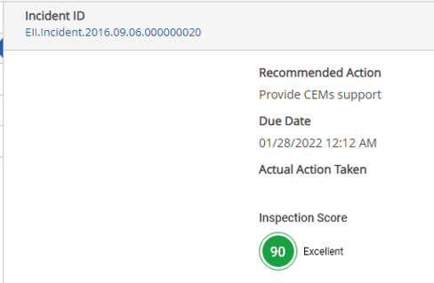
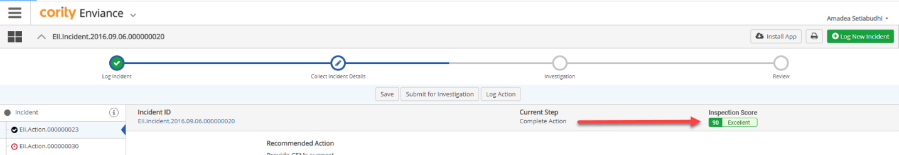
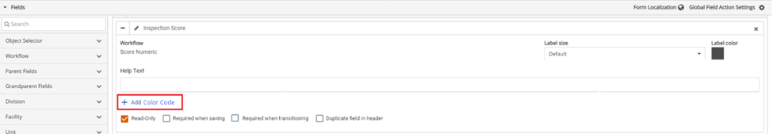
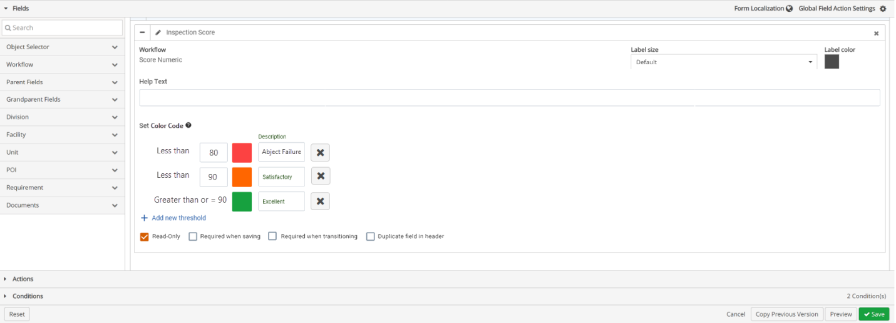

Numeric field color coding based on thresholds, can provide users with meaningful visual information when finding out a rating for an inspection score, risk rank, or other numeric rating.
On a form in a workflow, the numeric score will display as a score value with the related color that is assigned to a threshold.

This can also be displayed on the header of a workflow.

To add a color code related to thresholds:
From the main menu dropdown, select Designer to open Forms Designer.
To select a specific workflow step, select a Form Type, and then select the desired Workflow Step.
Click the Fields ribbon.
The Fields ribbon will expand with a list of field types and two sections: Header Fields and Field Sections.
Under the Field Sections, click the ˅ icon next to the desired field.
To the left of the field, click the + icon in front of a Workflow field.
Within a Workflow, click + Add Color Code.
By default, no color code will be applied. Add Color Code will be greyed out for any input workflow form fields that are not set to Read Only or have the risk matrix enabled.
This is not applicable for Data View, Calculated Numeric, Parent, and CO fields as they are not INPUT fields.
If the user hovers over the greyed-out control, a message will display "This feature is not available for INPUT fields (i.e. not read-only) or risk matrix fields.

Once + Add Color Code is clicked. Set Color Code section will appear.

By default, there is three colors that are set (red, orange, and green), two thresholds set (less than 80, and less than 90), and 3 descriptions (Abject Failure, Satisfactory, and Excellent).
To change the colors used for your data, click the colored boxes, a color picker window will open.
Select the color you want. Once a color code is applied, the read only checkbox will be checked and greyed out.
To change the threshold values, click the Less than textbox and type in a value. You can input value(s) for all thresholds except for the last threshold which will be calculated based on the previous threshold as “Greater than or = X”
To add more threshold rows, click + Add New Thresholds. You can add up to 5 threshold rows.
To remove a threshold row, click the x that follows the description column of a threshold. If a value is not inputted in the threshold boxes, or a description is not inputted, an error message will display when trying to save changes, indicating that information is missing and needs to be filled in.
Select Duplicate field in header, for score to also show in the header of the workflow.